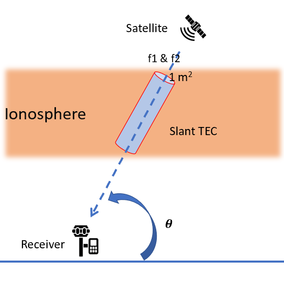
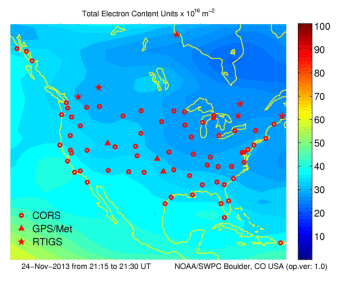
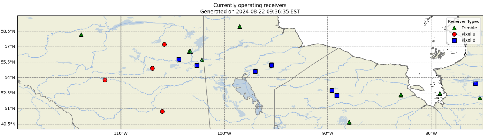
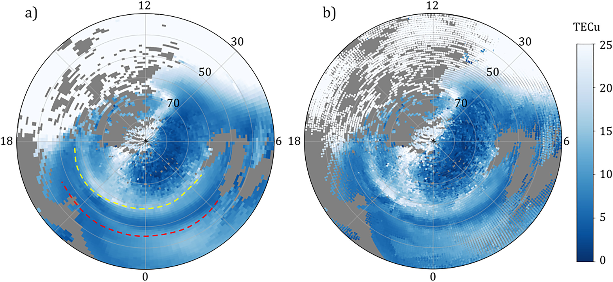
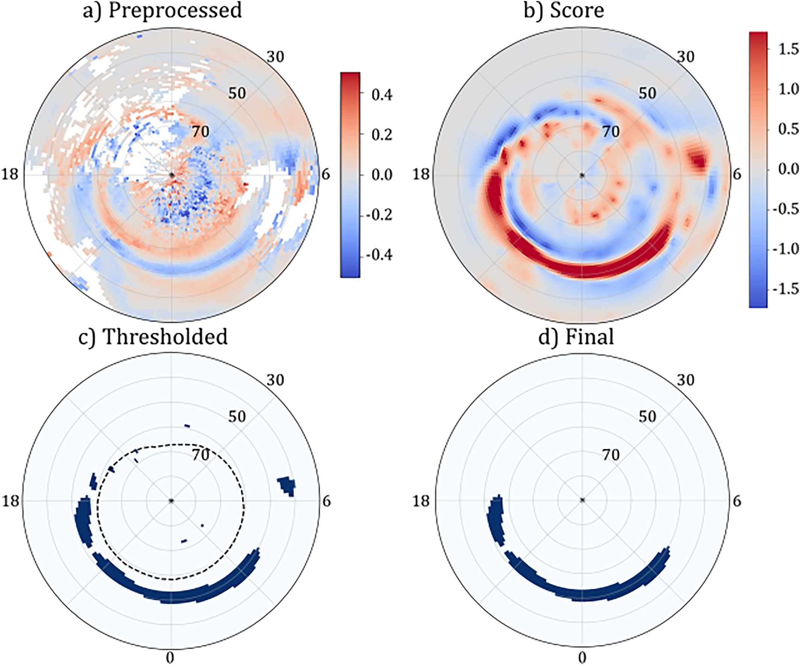
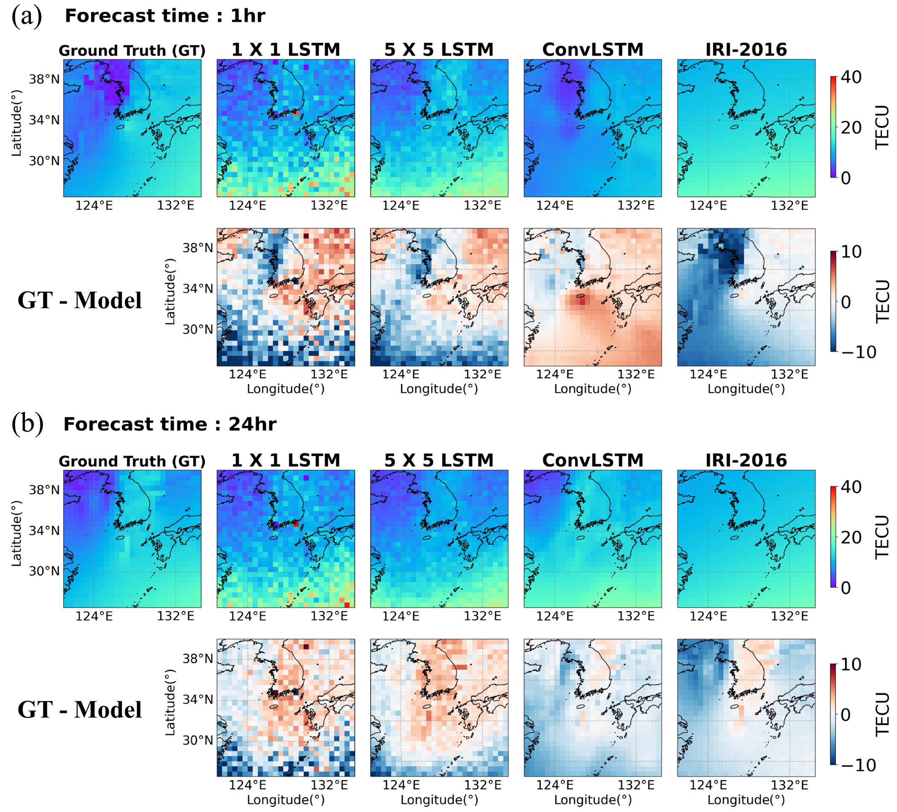
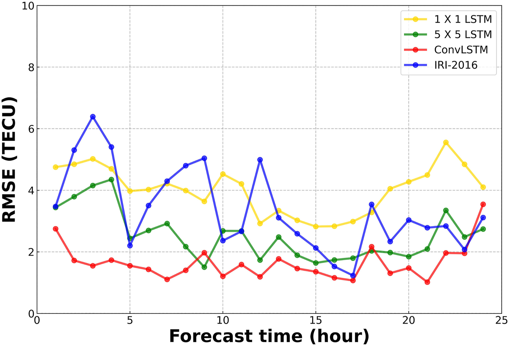
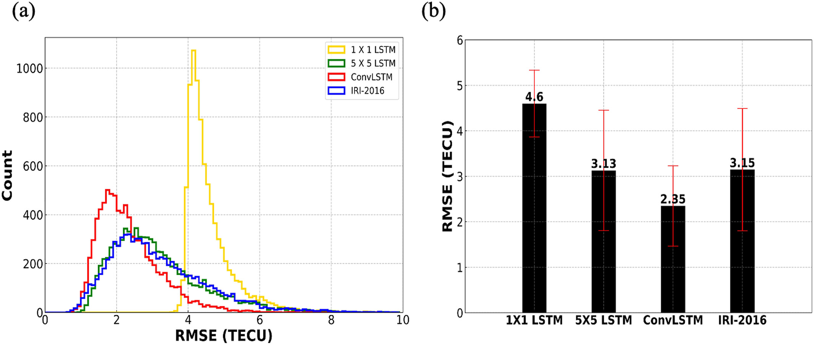

Who I am

Links
Contact me
I can be emailed at kshitijd [at] bu.edu. Inspired by Piotr Teterwak I am available for "office hours" (online or through video conferencing) each week to talk about anything you like. I have gone through Masters admissions and the post-COVID US STEM job hunt, and also defended a thesis, so I have some perspective on that as well as graduate student life. Email me with the subject line "OFFICE HOURS" and give me a brief overview of what you want to talk about. Ideally you should be an undergraduate or new (US) Masters student in some field relevant to EECS, but I am happy to talk with new grads and high schoolers as well.
My interests
I'm broadly interested in astrophysics and currently studying the application of inverse methods to astrophysical phenomena. I hope to branch out into more applied SciML and develop faster and more reliable methods to understand these phenomena.
Some things I've worked on
- (BU, 2022-2024): A variety of investigations into the STEVE phenomenon - fluid electrodynamic simulations, citizen science + scientific data-driven reconstruction, deep learning methods for automated detection systems. I defended a Master's thesis in April 2024 (Committee: Joshua Semeter, Yukitoshi Nishimura, Michael Hirsch) on the latter two topics.
- (BU, 2023): I worked on the NASA Life on Mars initiative at Hariri. I simulated EM propagation through Mars' ionosphere and developed models for detecting features on GNSS maps.
- (BU, 2024): During the April 8 full solar eclipse, the Semeter Lab members went around New England and into Canada to record GNSS data from consumer cell phones. I helped take observations at MIT and Ogunquit, ME. A poster was presented by Nina Servan-Schreiber at the 2024 CEDAR Workshop.
- (GaTech, 2024): A VLM-LLM integrated end-to-end system that generates insurance recommendation reports using a combination of tenant complaints and photos taken by an insurance agent for Hacklytics 2024.
- (MIT, 2024): Developed custom optimizers for linear quantum photonic GANs at iQuHack-24.
- (MIT, 2023): A QCBM-based music generator that won second place in the IBM x Covalent challenge at iQuHack-23.
- (COEP, 2022): Building a neutral hydrogen radio telescope from scratch, advised by Archana Thosar.
- (IIT Bombay, 2021, BU, 2022): Analysis of the binary star system QX Cas with PHOEBE.
- (COEP, 2021): Some linear models for solar power, advised by Suhas Kakade and Rohan Kulkarni.
Miscellaneous
-
I keep a list of courses I took at BU along with my thoughts on them. The course name, number, and instructor might have changed since I wrote them. You can find them here.
-
Check out some of my thoughts here.
What on the internet do I find interesting?
- scivision.dev: Michael Hirsch singlehandedly carries the GNSS community on his back with Georinex and his website is full of useful tips and tricks for wrangling with C Compilers.
- Dan Luu's website. Commentary on programming and tech-society.
-
Fall 2022
- EC516 Digital Signal Processing
This was the first real signal processing course I'd taken and it was taught by the great Hamid Nawab, who contributed a great deal to Oppenheim's Signals and Systems, the primary signal processing textbook used worldwide. The course mostly covered Fourier transforms for discrete signals and was largely mathematical, with very few practical applications. Professor Nawab is a great instructor and is lenient while grading, but the main appeal of this course is that he knows how to teach, and more importantly, how to solve problems. As far as I know, teaching duties for EC516 and EC520 are swapped every few years between Professors Nawab and Konrad. - EC504 Advanced Data Structures
This course was taught by Richard Brower, who has a (fairly unfounded) poor rating on RateMyProfessor. In contrast to many others, I believe this class is one of the best in the ECE department. The content is fairly standard for an algorithms course: arrays, linked lists, trees, graphs, and then a few classical problems such as the knapsack problem. Be prepared to practice. As of May 2024, this course seems to be taught by Ari Trachtenberg.
- EC516 Digital Signal Processing
-
Spring 2023
- EC503 Learning from Data
This is a basic introduction to machine learning and is taught by different instructors every semester. I took it with Francesco Orabona, who is now at KAUST. As an expert in optimization theory, Professor Orabona starts with PAC learning and devotes the latter two-thirds of his course to algorithms and their implementation. If taught by Ishwar, I believe the content is reversed—he starts with regression, nearest neighbors, and then moves to optimization algorithms and the underlying theory. Quite homework-heavy. - AS708 Cosmic Plasma Physics
Trial by fire if you haven't taken AS703 Introduction to Space Physics like I hadn’t. Professor Oppenheim is approachable, but the course content is as hard as it gets for linear plasma theory, and solving homework is a team effort. Very homework heavy and requires a background in physics and reading papers just to understand some problems.
- EC503 Learning from Data
-
Fall 2023
- EC574 Physics of Semiconductor Materials
Introductory quantum mechanics and solid-state physics. Professor Bellotti has a great sense of humor and is a good instructor, but his teaching methods are definitely old-school. The latter third of the course is hard because the introduction to solid-state physics does not draw from Brandsen and Joachin. - PY536 Quantum Computing
I was fairly disappointed with this course as it assumed the student had a background in graduate-level quantum mechanics, but was advertised as an algorithms course. The homework was obscure and confusing and relied on being able to peruse the literature and completely imbibe it. There is no hand-holding here. - EC533 Advanced Discrete Mathematics
I will fully admit that I smurfed in this course. The subject matter was something I had done since the age of 13 and Professor Levitin is great. I wish I had taken his other course, EC534 Discrete Stochastic Models, but I couldn't afford to. - EC562 Fourier Optics
While the subject itself is not necessarily difficult, the instructor (Luca Dal Negro) makes you work very hard. Be prepared to spend many hours practicing the work. The textbooks used are Joseph Goodman's Introduction to Fourier Optics and David Voelz's Computation Fourier Optics: A MATLAB tutorial.
- EC574 Physics of Semiconductor Materials
About
Inspired by Dan Luu, I've decided to add a writing section to this website. While I'm not sure whether I'd ever cover the kinds of topics he does, this might be useful.
Whenever I post long-form content, a reverse-chronological list will update on this page.
this is just a test file
<<<<<<< HEADthis is just a test file
this is just a test file
this is just a test file
=======Test
>>>>>>> 67fa202 (new access token)Overview
TEC
The Total Electron Content is the columnar number density of electrons between a satellite and a GNSS receiver.

where $$f_1=1575.4210^6 Hz$$ (The L1 frequency) and $$f_2=1227.6010^6 Hz$$ (The L2 frequency).
The TEC is given by $$TEC=\frac{f_1^2 f_2^2}{f_1^2 - f_2^2} * 10^{-16} * \frac{1}{40.309} (\phi_1-\phi_2+\epsilon)$$ where $$10^{-16}$$ is a multiplicative constant to denote it in (TECU), and $$\phi_1,\phi_2$$ are the carrier phases/pseudoranges and $$\epsilon$$ is the error. The assumption is that the ionosphere is a cold, collisionless, magnetized plasma.
We record the raw pseudoranges, carrier phases, signal strength, etc in GNSS receivers at certain times (every 15 seconds, 30 seconds, 1 second (high freq), etc) along with some environmental conditions (wind speed, temperature, humidity, etc) and internal operating parameters (SNR, PDOP, VDOP, HDOP, number of satellites in contact with, uptime hours, downtime, correction latency) at roughly the same frequencies, but can be changed.
We produce TEC maps, for example, like this Wikipedia one:

The red dots show GNSS receiver stations in some locations in the US, and their observations are spatially interpolated.
Our Goal
The primary objective of the BU Space Physics Lab is to enhance geospatial infrastructure by deploying a network of low-cost GNSS stations utilizing consumer mobile devices (at the moment, Google Pixel phones) integrated with advanced environmental monitoring systems. Our specific goals are as follows:
-
Expand GNSS Coverage and Accuracy: Increase the spatial density and distribution of GNSS stations across Canada, particularly in remote and sparsely monitored regions, to improve the precision, accuracy, and reliability of geospatial positioning data.
-
Optimize Cost-Efficiency through Consumer Technology: Leverage the widespread availability and technological advancements of consumer-grade mobile devices to create a cost-effective, scalable network of GNSS stations, reducing reliance on traditional, high-cost geodetic equipment.
-
Integrate Multidimensional Environmental Monitoring: Combine GNSS data with environmental sensors to capture a comprehensive set of parameters, including atmospheric conditions, temperature, and humidity, enabling more robust analysis of environmental and geospatial phenomena.
-
Advance Scientific Research and Applications: Provide high-resolution geospatial and environmental datasets to support a broad range of scientific research, including studies on climate change, natural hazard monitoring, and precision agriculture, as well as applications in engineering and urban development.
Current Operational Setup

Current System
-
Hardware Components ✅
- Consumer Mobile Devices (Google Pixels):
- GNSS chips for geospatial data collection.
- Price: ~$550.00 per device
- Environmental Sensors:
- Air Quality Sensor: Honeywell HPMA115S0-XXX Particle Sensor.
- Price: ~$55.00 per unit
- Temperature Sensor: Bosch BME280 Environmental Sensor.
- Price: ~$10.89 per unit
- Humidity Sensor: Bosch BME280 Environmental Sensor.
- Price: ~$10.89 per unit
- Barometric Pressure Sensor: Bosch BMP388 Barometric Pressure Sensor.
- Price: ~$15.49 per unit
- Air Quality Sensor: Honeywell HPMA115S0-XXX Particle Sensor.
- Power Supply: ✅
- Solar Panels: Renogy 100W 12V Monocrystalline Solar Panel.
- Price: ~$125.00 per unit
- Battery Packs: Anker Powerhouse 200 Portable Rechargeable Battery.
- Price: ~$300.00 per unit
- Solar Panels: Renogy 100W 12V Monocrystalline Solar Panel.
- Communication Modules: ✅
- Cellular Connectivity: Quectel EC25-AF 4G LTE Module.
- Price: ~$35.00 per unit
- Wi-Fi and Bluetooth: Espressif ESP32 Module.
- Price: ~$8.50 per unit
- LoRaWAN: The Things Network (TTN) LoRaWAN Gateway.
- Price: ~$150.00 per unit
- Cellular Connectivity: Quectel EC25-AF 4G LTE Module.
Total Hardware Cost per Unit: ~$1,260.77 (including tax)
- Consumer Mobile Devices (Google Pixels):
-
Data Collection Framework
- GNSS Logger (GNSS & Environmental Monitoring App): ✅
- Platform: Android
- Real-time GNSS data logging.
- Sensor data logging
- Data encryption and offline storage.
- Edge Computing Device: ✅
- Model: Raspberry Pi 4 Model B.
- Price: ~$59.00 per unit
- Local processing and data filtering.
- Python scripts for data handling.
- Local data storage on SanDisk Extreme PRO 128GB microSDXC card.
- Price: ~$38.00 per unit
- Model: Raspberry Pi 4 Model B.
Total Data Collection Framework Cost per Unit: ~$106.70 (including 10% tax)
- GNSS Logger (GNSS & Environmental Monitoring App): ✅
-
Data Transmission and Communication
- MQTT Broker: ✅
- Tool: Eclipse Mosquitto.
- Price: Free (Open-source)
- Tool: Eclipse Mosquitto.
- HTTP/HTTPS API: ✅
- Tool: Flask
- Price: Free (Open-source, but development costs included above)
- Tool: Flask
Total Data Transmission and Communication Cost per Unit: ~$0 (Development cost included above)
- MQTT Broker: ✅
-
Cloud Infrastructure
- Cloud Storage: ✅
- Tool: Amazon S3
- Price: ~$0.025 per GB per month
- Tool: Amazon S3
- Cloud Computing: ✅
- Tool: AWS Lambda
- Price: ~$0.20 per 1 million requests
- Tool: AWS Lambda
- Database: ❌
- Tool: PostgreSQL with PostGIS extension.
- Price:
!$0.27 per hour (RDS micro instance)
- Price:
- Tool: PostgreSQL with PostGIS extension.
Estimated Operating Cost - Cloud, Data, Software Services: ~$108.13 per unit per month (including tax)
- Cloud Storage: ✅
-
Data Engineering Pipeline
- Data Ingestion: ✅
- Tool: Apache Kafka
- Price: ~$0.13 per GB (managed service)
- Tool: Apache Kafka
- Data Processing: ✅
- Tool: Apache Spark
- Price: ~$0.12 per vCPU-hour (managed service)
- Tool: Apache Spark
- Data Quality Assurance: ✅
- Tool: Python
Total Data Engineering Pipeline Cost per Unit: Included in cloud costs
- Data Ingestion: ✅
-
Data Visualization and Analytics
- Geospatial Visualization: ✅ (somewhat - Cartopy+Georinex+h5py)
- Tool: Python+ArcGIS
- Price: ~$1,650.00 per ArcGIS license per year (BU license)
- Tool: Python+ArcGIS
- Dashboarding: ❌
- Tool: Grafana
- Price: Free (Open-source)
- Tool: Grafana
- Advanced Analytics: ✅
- Tool: SageMaker
- Price: ~$0.14 per hour (training) + ~$0.06 per hour (inference, including tax)
- Tool: SageMaker
Total Visualization and Analytics Cost per Unit: ~$224.00 per unit per year (including tax)
- Geospatial Visualization: ✅ (somewhat - Cartopy+Georinex+h5py)
-
Data Distribution and Sharing
- Data API: ❌
- Tool: RESTful API.
- Data Catalog and Access Control: ❌
- Tool: AWS Glue Data Catalog
- Price: $1.10 per 100,000 objects/month (including tax)
- Tool: AWS Glue Data Catalog
Total Distribution and Sharing Cost per Unit: Included in cloud costs
- Data API: ❌
-
Maintenance and Monitoring
- System Monitoring: ❌
- Tool: Grafana
- Remote Management: ✅
- Tool: AWS System Manager
- Price: $0.11 per managed instance per hour (including tax)
- Tool: AWS System Manager
Total Maintenance and Monitoring Cost per Unit: ~$76.45 per unit per year (including tax)
- System Monitoring: ❌
Summary
-
Total Price per Full Device and Monitoring Setup: ~$1,367.47 (including tax)
-
Number of Full Setups Ready: 13
-
Total Price Until Now: ~$17,777.11 (including tax)
-
Estimated Operating Cost - Per Unit: ~$192.80 per unit per year (including tax)
-
Estimated Operating Cost - Cloud, Data, Software Services: ~$108.13 per unit per month (including tax)
Algorithms
Data Processing
1. Ionospheric Assumption Validation
For speed of computation, we use fast 2d and 3d natural neighbors interpolation (thick large-scale structures) and VISTA (thick medium-scale structures) (Video Imputation with SoftImpute, Temporal smoothing and Auxiliary data) to validate the ionospheric assumption. The VISTA algorithm is shown below

The assumption is (somewhat) invalid during solar storms, geophysical storms, magnetic reconnection with solar winds, coronal mass ejections, and so on.
2. Main Ionospheric Trough Identification
The Main Ionospheric Trough (MIT)

Characteristics of the MIT:
- Low density arc-shaped trough whose formation is unknown.
- Forms at night due to depletion in the F-region, but it is unknown why.
- To identify it, we use global TEC data from the Madrigal database and use computer vision to identify it in spatiotemporal maps.
Technique to identify the trough:
- Grid TEC observations (1° x 1°) and smooth with averaging. (Practically, download ~50GB of data from Madrigal, store in AWS S3, chunk when using Lambda, run computations with h5py and scientific libraries on EC2 instances, and use Amazon Glue to process things with PySpark/Apache, then grid and smooth). Problems faced: Uneven distribution along longitude and frequency analysis not possible.
- Preprocess: Discard negative values, estimate background with sliding windows to filter out diurnal/seasonal trends. Scaling up (with the proposed network) would allow implementation of band pass filters at higher resolution.
- Scoring: Set up the inverse problem. Assume each preprocessed image is a linear combination of Gaussian RBFs and the weights are the image score values. The $n^{th}$ image is assumed to be $-A_n u_n+\epsilon_n$, where $u_n$ is the image we want, $A_n$ (after removing the basis columns) is a matrix with RBFs centered on the pixels of the grid, and there is some noise. We minimize the resultant image $$u_n^* = \arg\min_{u_n} x_n^T A_n u_n + \alpha |W_n u_n|_2^2 + \beta R(u_n)$$. Here $x_n$ is the $n^{th}$ preprocessed image. You have standard regularizers and total variance denoising at the end.
- Postprocess and verify: After this, we apply a combination of dilation and erosion to get the MIT. This is a no-ground-truth problem, so we have to compare with readings from local receivers to see if the structure exists.

| Metric | Value for n=10,000 | Value for n=100,000 |
|---|---|---|
| Execution Time (Wall-clock) | 8 hours | 5 days ms |
| Memory Usage | 22 GB | 348GB |
3. RINEX conversion
Developed an internal Python package named rinexpy - looking to merge with georinex:
rinexpy Operations
-
Merging and Editing RINEX Files:
rinexpyprovides the ability to merge multiple RINEX files into a single output. It also allows for editing of the file contents, such as adjusting header information, modifying observation types, and managing data intervals to ensure consistency across different GNSS data sources.
-
Clock Jump Correction:
rinexpyautomatically detects and corrects clock jumps in GNSS observation data. This feature ensures time continuity and improves the accuracy of the GNSS data by addressing disruptions caused by clock shifts.
-
Ionospheric Correction:
rinexpyapplies higher-order ionospheric corrections to the GNSS data, mitigating the impact of ionospheric disturbances on the accuracy of satellite positioning information.
-
File Format Conversion:
rinexpysupports converting BINEX and RTCM files into the RINEX format. This conversion simplifies working with GNSS data by providing a standardized format that is widely used and recognized across various platforms.
-
Interactive RINEX File Viewer:
rinexpyincludes an interactive, web-based viewer for RINEX files. This feature allows users to visualize and analyze GNSS data efficiently, making it easier to interpret and manage the information contained in RINEX files.
Examples:
- Merging files
from rinexpy import merge_files
# Merge multiple RINEX files into a single output
merged_file = merge_files(['file1.rnx', 'file2.rnx'], output='merged_output.rnx')
# Edit RINEX file: Change data interval and include only specific satellites
edited_file = merge_files(
['file1.rnx'],
output='edited_output.rnx',
interval=30, # Change data interval to 30 seconds
include_sats=['G01', 'G02'] # Include only satellites G01 and G02
)
- Correcting clock jumps
from rinexpy import correct_clock_jumps
# Automatically detect and correct clock jumps in a RINEX file
corrected_file = correct_clock_jumps('input_file.rnx', output='corrected_output.rnx')
- Ionospheric correction
from rinexpy import ionospheric_correction
# Apply higher-order ionospheric corrections to a RINEX file
corrected_file = ionospheric_correction('input_file.rnx', output='corrected_output.rnx')
- File Format Conversion - BINEX, RTCM, etc
from rinexpy import convert_to_rinex
# Convert a BINEX file to RINEX format
rinex_file = convert_to_rinex('input_file.binex', output='output_file.rnx')
# Convert an RTCM file to RINEX format
rinex_file = convert_to_rinex('input_file.rtcm', output='output_file.rnx')
- RINEX viewer (Georinex call)
from rinexpy import view_rinex # Soft Georinex call, output as interactive Matplotlib figure
# Launch an interactive viewer for a RINEX file
view_rinex('input_file.rnx')
4. Analysis
1. Cycle slip correction
We design machine learning models for cycle slip correction. These are better than the heuristic 'stiching' process that may remove important TEC jumps that could identify an ionospheric phenomenon.


The technique used is LSTM-based autoencoders, for several reasons.
- The Poker Flat setups are the same receiver in roughly the same area, so we are justified in using LSTM-based autoencoders for this.
- Under the assumptions that the internals of Pixel phones suffer roughly the same wear-and-tear, autoencoders are straightforward to deploy on Sagemaker and call for inference. We are looking into making cycle slip correction on-device using heuristic algorithms, but for large data, minimal scalloping and autoencoders are used. Caveat: we are still in the modeling stage because of the temperature dependence of recorded pseudorange on GNSS noise.

We also account for multipath noise, temperature noise (Rideout and Coster), propagation errors, ionospheric delays, and utilize precise point positioning to estimate slant TEC as accurately as possible.

| LSTM-Based autoencoder metric | Low Power Receiver | High Power Receiver |
|---|---|---|
| Training Time (Wall-clock) | 18 hours | 10 hours |
| Inference time (Wall-clock) | ~3 seconds | ~3 seconds |
| Memory Usage | 13.5 GB | 27 GB |
| GPU Utilization | 60% | 80% |
| Disk I/O | 100 MB/s | 200 MB/s |
| Network Bandwidth | 30 MB/s | 80 MB/s |
| Model Size | 247 MB | 332 MB |
2. Environmental conditions
- If a receiver fails, we use 2-layer Gaussian process regression in order to estimate what readings of that receiver using receivers nearby. This is scalable but computationally expensive. We also use ConvLSTM fore long-time forecasting, but are looking to move to nowcasting.



- Denoising technique: Assuming a zero-mean non-temperature-dependent noise, we do quick denoising with Haar coefficients on-device with the Raspberry Pi 4 Model B.
3. Predictive maintenence:
We have continuous monitoring stations set up and collect the following data per station:
| Column Name | Description | Frequency |
|---|---|---|
Receiver_ID | Unique identifier for each GNSS receiver | Static |
Location | Latitude and Longitude coordinates of the receiver | Static |
Installation_Date | Date when the receiver was installed | Static |
Manufacturer | The manufacturer of the GNSS receiver | Static |
Model | Specific model of the GNSS receiver | Static |
Firmware_Version | Firmware version currently running on the receiver | Static/As Updated |
Maintenance_Date | Date of the last maintenance check | As Updated |
Temperature_C | Recorded temperature at the receiver location (in Celsius) | Hourly |
Humidity_% | Relative humidity at the receiver location (as a percentage) | Hourly |
Precipitation_mm | Amount of precipitation (in millimeters) | Hourly |
Wind_Speed_kmh | Wind speed at the receiver location (in km/h) | Hourly |
Solar_Radiation_Wm2 | Solar radiation at the receiver location (in W/m²) | Hourly |
Signal_Strength_dB | Signal strength received by the GNSS receiver (in dB) | Receiver Frequency |
SNR_dB | Signal-to-noise ratio (in dB) | Receiver Frequency |
Number_of_Satellites | Number of satellites in view | Receiver Frequency |
PDOP | Position Dilution of Precision | Receiver Frequency |
HDOP | Horizontal Dilution of Precision | Receiver Frequency |
VDOP | Vertical Dilution of Precision | Receiver Frequency |
Correction_Latency_s | Time delay in the correction signal (in seconds) | Receiver Frequency |
Correction_Availability_% | Percentage of time correction data is available | Receiver Frequency |
Uptime_Hours | Total uptime of the receiver (in hours) | Daily |
Downtime_Hours | Total downtime of the receiver (in hours) | Daily |
Power_Consumption_W | Power consumption of the receiver (in watts) | Hourly |
Battery_Voltage_V | Battery voltage level (if applicable) | Hourly |
Internal_Temperature_C | Internal temperature of the GNSS receiver (in Celsius) | Hourly |
Error_Count | Total number of errors logged | As Occurred/Daily |
Warning_Count | Total number of warnings logged | As Occurred/Daily |
Reboot_Count | Number of reboots the receiver has undergone | As Occurred |
Last_Error_Code | Code of the last error encountered | As Occurred |
Maintenance_Flag | Boolean flag indicating whether maintenance is required | Daily/As Updated |
Nearby_Interference_Sources | Number of known interference sources near the receiver | Daily/As Updated |
Distance_to_Base_Station_km | Distance to the nearest base station (in kilometers) | Static |
Antenna_Condition | Condition of the antenna (e.g., "Good," "Needs Replacement") | As Updated |
Failed | Boolean | Set to 1 if no response for 24 hours |
- Time-series classification: How does TEC change during an auroral event?
Given a dataset of time-series TEC curves at some frequencies, we want to classify them to make an early-warning system for auroral events (so citizen scientists can go out and take photographs!)
You can probe ionospheric conditions (such as from DMSP) and get extra time series, as shown.

a. To classify phenomena, we use two separate models. First, the method for auroral phenomenon identification.
Method:
- Use 1D CNN to just raw TEC changes as STEVE, SAPS, SAID, Discrete Aurora, Continuous Aurora, etc.
- Analyze satellite flyby data in order to see what ionospheric, magnetospheric, and thermospheric parameters change in that time period (use CNN for this, but we are testing VLM finetuning), and if the event is classified into two classes by two different models, then this is a warning event.
| Metric | 1-D CNN | Description |
|---|---|---|
| Accuracy | 0.88 | Solid overall correctness, but room for improvement. |
| Precision | 0.85 | Decent true positive rate out of all positive predictions. |
| Recall | 0.82 | Good true positive rate, but some false negatives. |
| F1 Score | 0.83 | Balanced precision and recall; slight drop in handling imbalanced classes. |
| AUC - ROC | 0.89 | Good area under the ROC curve, decent class distinction. |
| Confusion Matrix | Mostly high diagonal values | Most predictions are correct, but some off-diagonal errors exist. |
| Log Loss | 0.35 | Moderate cross-entropy loss; predictions could be more confident. |
| Balanced Accuracy | 0.86 | Good average recall across classes; some class imbalance issues. |
| Cohen’s Kappa | 0.75 | Moderate agreement between predictions and actual classes. |
| MCC (Matthews Correlation Coefficient) | 0.72 | Decent performance, some challenges with imbalanced classes. |
| Top-k Accuracy | 0.94 for k=3 | High chance of true label being among top 3, but not perfect. |
| Mean Per-Class Error | 0.12 | Acceptable error rate across classes, but some inconsistency. |
| Time-to-Inference | ~18s | Adequate prediction time, could be optimized for real-time applications. |
b. Predictive Maintence: We use MINIROCKET for classification, but are actively refining this - we run into a data collection problem. We are now moving onto Bayesian modeling and predictive programming, with isolation forests.
| Metric | miniROCKET’s Value | Description |
|---|---|---|
| Accuracy | 0.82 | Good overall correctness, but lower than more complex models. |
| Precision | 0.80 | Reasonable true positive rate, with some false positives. |
| Recall | 0.78 | Adequate true positive rate, with more false negatives than desired. |
| F1 Score | 0.79 | Balanced performance between precision and recall, with noticeable trade-offs. |
| AUC - ROC | 0.78 | Decent area under the ROC curve, with good but not exceptional class distinction. |
| Confusion Matrix | Moderate diagonal values | Correct predictions for the most part, but more off-diagonal errors present. |
| Log Loss | 0.45 | Higher cross-entropy loss, indicating less confident predictions. |
| Balanced Accuracy | 0.80 | Average recall for classes shows room for improvement, especially with imbalance. |
| Cohen’s Kappa | 0.70 | Moderate agreement, but a noticeable decline compared to stronger models. |
| MCC (Matthews Correlation Coefficient) | 0.68 | Acceptable classification performance, but struggles more with imbalanced data. |
| Top-k Accuracy | 0.90 for k=3 | Decent chance of true label being in the top 3, but not as strong as better models. |
| Mean Per-Class Error | 0.15 | Higher error rate across classes, indicating inconsistency. |
| Time-to-Inference | ~5ms | Faster prediction time, a significant advantage in real-time applications. |
c. Forecasting
We test Lag-LLaMa, a foundational time-series model for predicting future environmental parameters, but this is still in the very early stage.
STEVE

Miscellaneous
Computer Vision algorithms used:
We use Max-Tree for faint phenomenon identification, active learning, monocular depth estimation (Depth Prediction Transformers), and Open Set recognition to identify STEVE in citizen science images.
The clustering model developed was to classify all-sky images of aurora - using ResNet-18 to extract features, used PCA to reduce dimensionality, and K-Means++ to cluster. Achieved silhouette score of 0.7, Davies-Bouldin index of 0.9, Calinski-Harabase index of 256 indicating high-quality cluster separation, and better separation between clusters.
Life on Mars
Generated TEC maps from MARSIS data by modeling with two-layer Chapman functions for Martian ionosphere. Used VISTA to reconstruct (in 3D), 3d volumes of maps. Auxiliary guess was made using natural pixel decomposition, where the 3d structure estimated with tomography. Specifically, it is modeled as a Fredkin integral of the first kind and pLogMART is used as the matrix inversion algorithm. Simulated GPS propagation through it
<<<<<<< HEADthis is just a test file